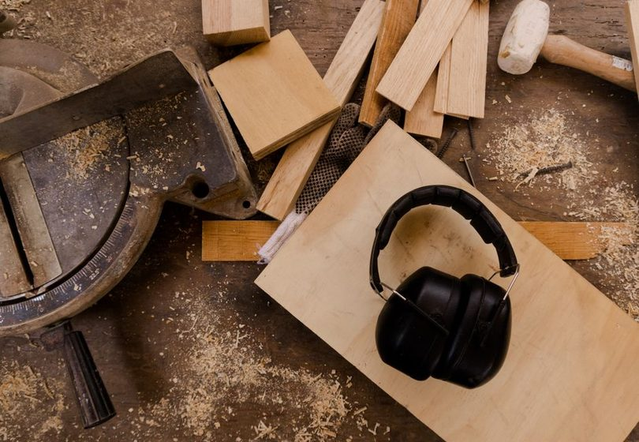
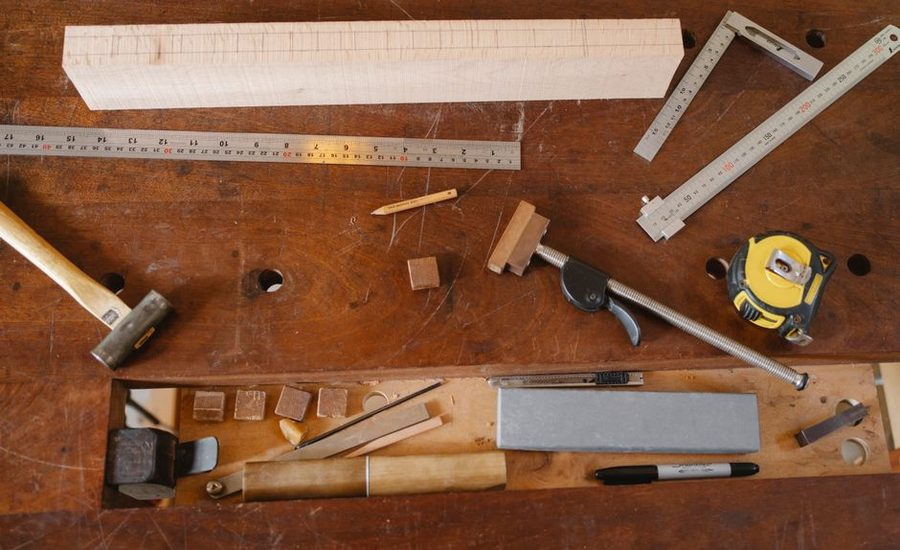

A two-millimeter error on paper becomes a drawer gap on the bench.
Railstile is a journal about the part of furniture-making that happens before the first cut: measurement, joints, and squaring. We write about the drawing, the datum face, and the habits that keep a cutlist honest — because the drawing tends to save more timber than technique does.

From the Drawing Table
9 entries · updated weekly
Reading the Cutlist Before You Touch the Saw
A cutlist is a set of promises. Most mistakes happen because someone read it the way they wanted it to say, not the way it says.

The Two-Millimeter Drawer
One case, traced from drawing to bench, showing exactly where a small rounding decision turned into a visible reveal.

Squaring a Carcase Without a Jig
The diagonal method is older than most of the jigs sold to replace it, and it still tells the truth faster.

Datum Faces and Why They Matter
Every measurement needs a face it trusts. Pick the wrong one, or none at all, and every later number drifts with it.

Dovetails Versus Dowels: A Drawing-Table Comparison
Not which joint is better, but which drawing decisions each one asks you to get right before you cut.

The Drawing That Saves More Timber Than Technique
Skill recovers a bad cut. A good drawing prevents the bad cut from being drawn in the first place.

Tolerance Stacking in Flat-Pack Furniture
Small allowed errors add up across a run of panels, and the last joint in the chain is the one that pays for all of them.

Grain Direction and Seasonal Movement
A panel that was flat in the shop in July may not stay flat through a dry winter, and the drawing can plan around it.

A Week With a Marking Gauge
Notes from setting a single gauge once and holding it through five different joints, instead of resetting it each time.
Cutlist
Cutlist is a small planning tool built alongside this journal — it turns a set of dimensions into a checked cutting diagram, flags stacked tolerances before they reach the saw, and keeps a running note of datum faces per part.
See how Cutlist worksAbout This Journal
Railstile is written by a small group of woodworkers and drafters who got tired of watching good timber get spent fixing drawing mistakes. We publish measured, specific pieces about the part of the process that happens with a pencil, not a blade.